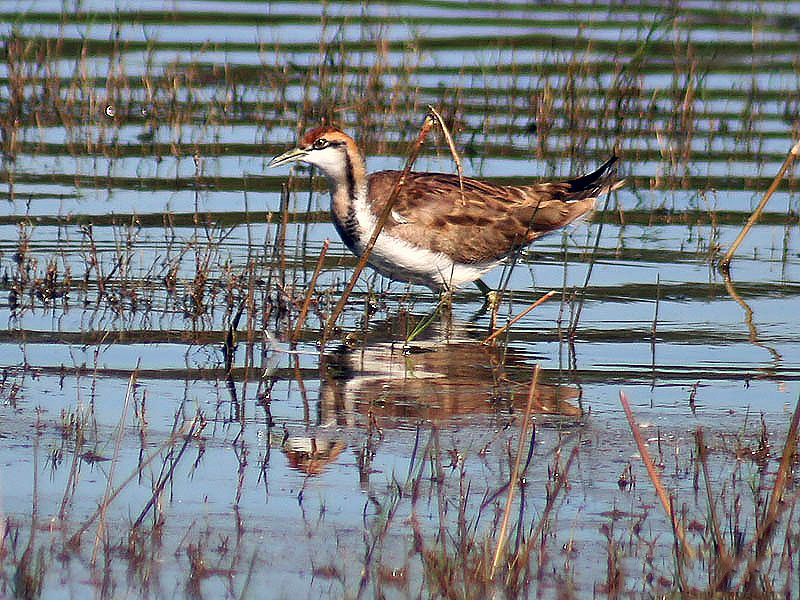

पिहोPheasant-tailed Jacana
Hydrophasianus chirurgus · Jacanidae · BRD-0083

- Scientific nameवैज्ञानिक नाम
- Hydrophasianus chirurgus (Scopoli, 1786)
- Familyकुल
- Jacanidae
- Hindiहिंदी
- पिहो / जल पीपी
- Local namesस्थानीय नाम
- piho, peeho, jal pipi, jalpipi, pihuya
- Status hereयहाँ की स्थिति
- native
- Movementआवागमन
- Resident; numbers rise with migrants
- IUCNIUCN
- LC
- Reviewसमीक्षा
- audited and independently read
When to look कब देखें
Present all year.साल भर मौजूद।
Some populations resident year-round; others migrate seasonally. Most active and visible during breeding season (June–August). All migrants and visitors →
Uses and possibilities उपयोग और संभावनाएँ
Drawn from the documented uses in the profile below, where each is labelled traditional, current or a research lead. All uses →
Tell it apart from इनसे अलग पहचानें
पिहो / Pheasant-tailed Jacana
Hydrophasianus chirurgus (Scopoli, 1786) — Jacanidae
पिहो — पूर्वी उत्तर प्रदेश की कमलयुक्त तालाबों और दलदली ज़मीन का एक अद्भुत पक्षी, जिसके पैरों की उँगलियाँ असाधारण रूप से लंबी होती हैं — ताकि यह तालाब की घास और पत्तियों पर बैठकर चल सके। प्रजनन काल में नर की पीठ पर काली चमक और लंबी तीन पूँछ की पंखें होती हैं, जिससे यह "pheasant-tailed" दिखता है। यह पक्षी विवाह व्यवहार में अनोखा है — मादा कई नरों के साथ साथी बनती है।
Quick Identification त्वरित पहचान
| Feature | Description |
|---|---|
| Size | Small to medium wader; 24–30 cm (non-breeding); 43–50 cm with breeding tail |
| Plumage (breeding) | Black and iridescent back; white neck; chestnut breast; long tail streamers |
| Plumage (non-breeding) | Brownish above; white below; black cap and eye-stripe |
| Feet | Extremely long toes with no webbing — adapted for walking on floating vegetation |
| Behaviour | Walks on lotus leaves and lily pads; bobs constantly |
| Tail | In breeding season, develops extraordinarily long tail streamers (females lack these) |
Field tip: A small wader with extraordinarily long toes, walking on floating vegetation in lotus ponds — is a Pheasant-tailed Jacana. In breeding season, males show dramatic long tail plumes. The extremely long toes are instantly recognizable.
हिंदी — कैसे पहचानें:
कमल की पत्तियों पर चलने वाली छोटी चिड़िया।
बहुत लंबी उँगलियाँ, कोई जाली नहीं।
प्रजनन काल में नर की लंबी काली पूँछ।
बार-बार सिर और पूँछ हिलाता है।
Morphology आकारिकी
Biometrics (non-breeding):
| Measurement | Range |
|---|---|
| Total length | 240–300 mm (non-breeding); 430–500 mm with breeding tail |
| Wing (flattened chord) | 125–150 mm |
| Tail (non-breeding) | 40–60 mm |
| Tail (breeding males) | 200–250 mm (extraordinarily long streamers) |
| Tarsus | 40–50 mm |
| Toes | Very long, up to 60+ mm, with no webbing |
| Weight | 140–200 g |
Size: 24–30 cm (non-breeding); 43–50 cm including tail streamers (breeding males).
Plumage (non-breeding): Brownish-grey above; white throat and underparts. Characteristic black cap and stripe through eye.
Plumage (breeding male): Develops remarkable transformation — back becomes glossy black-green (iridescent). Neck and breast chestnut-buff. Tail grows into two extraordinarily long black streamers that arc gracefully.
Plumage (breeding female): Does NOT develop the long tail; remains smaller and less brightly coloured than males. Duller overall.
Feet: The most distinctive feature — extremely long toes with no webbing. Toes are disproportionately long relative to body size, allowing the bird to distribute weight over large areas and walk on floating vegetation.
Eyes: Dark iris; eye-stripe visible in non-breeding plumage.
Sexes: Highly dimorphic during breeding season. Males larger, more brightly coloured, with long tail streamers. Females smaller, lack tail, duller plumage.
Juveniles: Similar to non-breeding females; duller and less contrasting.
Vocalisations. Two main call types:
- Territorial and alarm call: A loud, harsh kee-wee or nasal chee-chee-chee given while perching on water plants; frequency 2.0–4.0 kHz.
- Contact call: Softer chattering and whistling between mates and at the nest.
हिंदी: तीव्र, ऊँचा कूटना। दावेदारी के लिए भी उड़ते समय आवाज़।
Ecological Role पारिस्थितिक भूमिका
Insectivore: Pheasant-tailed Jacanas feed primarily on:
- Aquatic insects and their larvae (dragonflies, damselflies, water beetles)
- Aquatic invertebrates (snails, small crustaceans)
- Occasionally small fish and tadpoles
- Floating vegetation seeds and shoots
Gleaning forager: Walks slowly on floating vegetation, picking insects from water surface and plants. Occasionally upends or submerges head while foraging.
Lotus pond specialist: Highly dependent on lotus ponds and similar floating vegetation structures. The specialized foot structure is an adaptation to this habitat.
Breeding system indicator: The presence of active jacana breeding indicates stable, intact floating-vegetation wetlands with low disturbance.
Pest control: Consumption of dragonfly nymphs and other aquatic insects provides minor pest control benefit.
हिंदी: कमल की पत्तियों पर चलकर कीड़े खाता है। बहुत विशेष पक्षी है।
Life Cycle / Phenology जीवन चक्र
Partial migrant: Some populations resident year-round; others show seasonal movements. More visible and vocal during breeding season.
Breeding: March–September, with peak activity June–August (monsoon and post-monsoon).
Mating system: Polyandrous — females mate with multiple males and lay separate clutches for each mate to incubate. Roles are reversed from most birds.
Nesting: Males build small nest of floating vegetation on floating-leaf platforms (lotus, waterlily). Nest is just a shallow scrape.
Eggs: 4 heavily spotted buff-brown eggs per clutch. Males alone incubate ~22–24 days.
Chicks: Precocial; leave nest within hours. Fed by attending male. Fledge at ~30–35 days.
Roosting: On floating vegetation; may move between ponds seasonally.
Migratory pattern: Some populations move in response to wetland water levels and food availability; others remain year-round.
हिंदी: साल भर दिख सकते हैं, पर ज़्यादा मानसून में प्रजनन करते हैं। मादा अद्भुत है — कई नरों से संतान बनवाती है।
Prey भोजन
| Prey | Hindi | Capture Method |
|---|---|---|
| Aquatic insect larvae | जल कीड़ों के बच्चे | Gleaning from water surface and plants |
| Adult dragonflies and damselflies | व्याधपतंग, इंद्रसेना | Gleaning and sometimes aerial capture |
| Aquatic snails | जल घोंघे | Picking from plants and water |
| Small fish and tadpoles | छोटी मछली, टैडपोल | Striking at water surface |
| Floating vegetation seeds | तैरती घास के बीज | Picking from plants |
हिंदी: कमल की पत्तियों पर कीड़े खाता है।
Conservation Status संरक्षण स्थिति
IUCN Status: Least Concern (LC)
Wildlife Protection Act, 1972: Listed under Schedule IV (Protected) of the Wildlife (Protection) Act, 1972, as amended in 2022. Hunting or harming a Pheasant-tailed Jacana is illegal in India.
Threats: Loss of lotus ponds and floating-vegetation wetlands through drainage, pesticide use, and conversion to agriculture. Water pollution affects both habitat and invertebrate prey availability.
Conservation importance: The presence of healthy populations indicates intact, undisturbed lotus ponds — increasingly rare in agricultural landscapes.
हिंदी: संरक्षित पक्षी है। कमल के तालाब का रक्षक है।
Agricultural / Human Relevance कृषि और मानव संबंध
Lotus cultivation: Jacanas occupy lotus ponds that are sometimes cultivated for edible tubers and seeds. Presence is considered beneficial as birds consume pest insects.
Pond health indicator: Presence of breeding jacanas indicates clean water, abundant aquatic invertebrates, and undisturbed floating-vegetation habitats.
Cultural significance: The remarkable polyandrous mating system and extraordinary tail plumes make this bird a subject of interest in ornithological literature and local folklore.
Neutral cultural status: Unlike storks and cranes, lacks major cultural protection or persecution locally.
हिंदी: यह कमल के तालाब में रहता है। कीड़ों को खाता है — अच्छा है।
Expected Locally स्थानीय रूप से अपेक्षित
Not a field record. Written from published accounts for eastern Uttar Pradesh. No confirmed local sighting yet — if you have seen it, that is what the atlas needs.
अभी तक स्थानीय पुष्टि नहीं। यह विवरण प्रकाशित स्रोतों से है।
The Pheasant-tailed Jacana is an uncommon to locally common breeding visitor to Basti district, present during March–September with peak activity June–August. Most records come from larger lotus-filled ponds and wetlands with extensive floating vegetation. The species is difficult to detect outside breeding season. Most sightings are of displaying males during monsoon months when territorial calling is most frequent.
Distribution वितरण
Global range: Widespread across the Oriental region, from Pakistan through the Indian subcontinent to Southeast Asia, Indonesia, and the Philippines.
In India: Found throughout freshwater wetlands of the plains and some hilly areas, from sea level to about 1,500 m elevation.
In Uttar Pradesh: Distributed across suitable wetlands throughout the state, particularly in the eastern plains.
In Basti district / eastern UP: Uncommon breeding visitor to lotus ponds and floating-vegetation wetlands, particularly along the Ghaghra and Rapti river systems and associated floodplain lakes.
Research Questions शोध प्रश्न
Anyone can investigate these | कोई भी इन प्रश्नों की जाँच कर सकता है
- Where are active jacana breeding sites in your area? / कहाँ प्रजनन करते हैं? — Search lotus ponds during breeding season (March–September).
- How many breeding males and females are present? / कितने नर और मादा हैं? — Count territorial males during dawn hours.
- What is their breeding success rate? / कितने बच्चे सफल होते हैं? — Monitor nests and chick fledging.
- Do the same individuals return each breeding season? / क्या साल-दर-साल एक ही पक्षी आते हैं? — Mark individuals and track returns.
- How has lotus pond habitat changed in your area? / कमल के तालाब में बदलाव हुआ है? — Compare past and current lotus pond distribution.
Similar Species मिलती-जुलती प्रजातियाँ
| Species | How to tell apart | हिंदी |
|---|---|---|
| Bronze-winged Jacana (Metopelus hypoleucus) | Larger; chestnut-brown on upperparts; occurs in southeast Asia (absent from eastern UP) | दूसरे देश में; भारत में नहीं |
| Common Moorhen (Gallinula chloropus) | Larger; dark grey-black; red shield on forehead; different habitat and behaviour | अधिक जल पक्षी; तालाब में |
Field rule: A small wader with extremely long, unwebbed toes, walking on floating lotus leaves and lily pads in wetlands — is a Pheasant-tailed Jacana. The long toes and small size are diagnostic. Breeding males show dramatic long tail streamers.
Taxonomy & Classification वर्गीकरण
Original description. Hydrophasianus chirurgus was described by Giovanni Antonio Scopoli in 1786 in his Deliciae Florae et Faunae Insubricae. Type locality: India. The genus Hydrophasianus contains only this species — a monotypic genus.
Subspecies. Monotypic — no subspecies are currently recognised. The species shows some geographical variation in plumage intensity, but boundaries are not formally recognized.
Family and order placement. Order Charadriiformes, family Jacanidae (jacanas), containing 8 species found in tropical wetlands worldwide. The genus Hydrophasianus is unique to Asia and represents the most specialized jacana for lotus-pond habitats.
Phylogenetic notes. Molecular studies show that Hydrophasianus chirurgus is the sister species to a larger clade of African and American jacanas. The genus diverged early in jacana evolution.
IUCN status rationale. Assessed as Least Concern (LC). The species has a large range and population remains stable. It benefits from traditional lotus pond cultivation systems and shows adaptability to different wetland types. Localized losses of habitat are offset by continued presence in traditional wetland areas.
Photo Gallery फोटो गैलरी
फोटो निर्देश: कमल के तालाबों में मानसून में आसानी से दिखते हैं। प्रजनन काल में नर की लंबी पूँछ की फोटो ज़रूरी है। लंबी उँगलियों को दिखाने वाली क्लोज़-अप भी महत्वपूर्ण है।
Photos needed आवश्यक फोटो
- [ ] Male in breeding plumage with tail streamers (नर लंबी पूँछ के साथ)
- [ ] Female for comparison showing lack of tail (मादा तुलना के लिए)
- [ ] Walking on lotus leaves showing foot structure (कमल पत्तियों पर लंबी उँगलियों सहित)
- [ ] Close-up of foot and toe structure (पैर क्लोज़-अप)
- [ ] Feeding behaviour (खाना खोजते हुए)
No photos yet — add field photos to media/species/pheasant_tailed_jacana/ and run node scripts/sync_photos.js.
Atlas Connections संबंधित प्रजातियाँ
- Indian Lotus — essential habitat; floating-leaf ponds are nesting and foraging sites
- Wandering Glider — shares lotus pond habitat; possible prey item for jacana
References संदर्भ
- Scopoli, G.A. (1786). Deliciae Florae et Faunae Insubricae. Typis Modoetiensibus, Pavia. [original description]
- Ali, S. & Ripley, S.D. (1987). Handbook of the Birds of India and Pakistan. Vol. 2. Oxford University Press, New Delhi.
- Grimmett, R., Inskipp, C. & Inskipp, T. (2011). Birds of the Indian Subcontinent. 2nd ed. Christopher Helm, London.
- Jenni, D.A. (1974). Evolution of polyandry in the spotted sandpiper. American Zoologist, 14(2), 1043–1053. [illustrating comparative jacana polyandry]
- BirdLife International (2023). Hydrophasianus chirurgus. IUCN Red List of Threatened Species.
- GBIF Occurrence Data — Hydrophasianus chirurgus, India (2024).
Source file: species/fauna/birds/pheasant_tailed_jacana.md